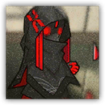

高阶术师 Senior Caster
远程 法术；精英 萨卡兹


|
精英法术作战人员。相比一般术师，更频繁使用难以抵挡的范围攻击法术，对阵线造成极高威胁，需要小心针对。 |
高阶术师丨Senior Caster
中型类人生物（术师），任意阵营
AC 13
先攻 +0（10）
HP 75（10d8+30）
速度 30 尺
| 调整 | 豁免 | ||
|---|---|---|---|
| 力量 | 8 | -1 | -1 |
| 智力 | 10 | +0 | +0 |
| 调整 | 豁免 | ||
|---|---|---|---|
| 敏捷 | 11 | +0 | +0 |
| 感知 | 11 | +0 | +2 |
| 调整 | 豁免 | ||
|---|---|---|---|
| 体质 | 16 | +3 | +3 |
| 魅力 | 17 | +3 | +3 |
技能 奥秘+2
装备 材料包
感官 被动察觉12
语言 通用语，以及一门任意语言
CR 2（XP 450；PB+2）
特质 Traits
魔法抗性 Magic Resistence。高阶术师为抵抗法术及其它魔法效应时进行的豁免检定具有优势。
法术溅射 Art Splash。如果高阶术师用法术只对一个距离自己30尺内的目标单独造成了伤害，他可以让其周围5尺的所有生物受到等同所造成伤害量一半的伤害。
动作 Actions
奥能爆发Arcane Burst。近战或远程攻击检定：+5，触及5尺或射程120尺。命中：13（2d10+3）力场伤害。
施法 Artcasting。高阶术师作为5级施法者施展以下一道法术，使用魅力作为施法属性（法术豁免DC13，法术攻击命中+5）：
随意：法师之手，魔法伎俩，鸣雷破，法师护甲（已计入AC）
每项2/日：粉碎音波，突发起爆KGE
每项2/日：粉碎音波，突发起爆KGE
高阶术师组长 Senior Caster Leader
远程 法术；精英 任意
|  |
精英法术作战人员。相比一般高阶术师更具威胁。频繁使用难以抵挡的范围攻击法术，对阵线造成极高威胁，需要小心针对。 |
高阶术师组长丨Senior Caster Leader
中型类人生物（术师），任意阵营
AC 14
先攻 +4（14）
HP 135（18d8+54）
速度 30 尺
| 调整 | 豁免 | ||
|---|---|---|---|
| 力量 | 9 | -1 | -1 |
| 智力 | 13 | +1 | +1 |
| 调整 | 豁免 | ||
|---|---|---|---|
| 敏捷 | 12 | +1 | +1 |
| 感知 | 11 | +0 | +3 |
| 调整 | 豁免 | ||
|---|---|---|---|
| 体质 | 16 | +3 | +3 |
| 魅力 | 18 | +4 | +4 |
技能 奥秘+4，察觉+3
装备 材料包
感官 被动察觉13
语言 通用语，以及一门任意语言
CR 5（XP 1,800；PB+3）
特质 Traits
法术溅射 Art Splash。如果高阶术师用法术只对一个距离自己30尺内的目标单独造成了伤害，他可以让其周围10尺的所有生物受到等同所造成伤害量一半的伤害。
动作 Actions
奥能爆发Arcane Burst。近战或远程攻击检定：+7，触及5尺或射程120尺。命中：20（3d10+4）力场伤害。
施法 Artcasting。高阶术师作为11级施法者施展以下一道法术，使用魅力作为施法属性（法术豁免DC15，法术攻击命中+7）：
随意：法师之手，魔法伎俩，鸣雷破
每项2/日：粉碎音波，法师护甲（已计入AC），突发起爆KGE
护盾高阶术师 Shielded Senior Caster
远程 法术；精英 任意

|
精英法术作战人员。相比一般高阶术师，使用法术强化了自身防御，需要小心针对。不过因为状态特殊，其法术抗性较低。 |
护盾高阶术师丨Shielded Senior Caster
中型类人生物（术师），任意阵营
AC 15
先攻 +2（12）
HP 75（10d8+30）
速度 30 尺
| 调整 | 豁免 | ||
|---|---|---|---|
| 力量 | 9 | -1 | -1 |
| 智力 | 10 | +0 | +2 |
| 调整 | 豁免 | ||
|---|---|---|---|
| 敏捷 | 14 | +2 | +2 |
| 感知 | 11 | +0 | +2 |
| 调整 | 豁免 | ||
|---|---|---|---|
| 体质 | 16 | +3 | +3 |
| 魅力 | 18 | +4 | +4 |
技能 奥秘+2,察觉+2
装备 材料包
感官 被动察觉13
语言 通用语，以及一门任意语言
CR 4（XP 1,100；PB+2）
特质 Traits
法术溅射 Art Splash。如果高阶术师用法术只对一个距离自己30尺内的目标单独造成了伤害，他可以让其周围5尺的所有生物受到等同所造成伤害量一半的伤害。
动作 Actions
奥能爆发Arcane Burst。近战或远程攻击检定：+6，触及5尺或射程120尺。命中：14（2d10+4）力场伤害。
施法 Artcasting。护盾高阶术师作为11级施法者施展以下一道法术，使用智力作为施法属性（法术豁免DC14，法术攻击命中+6）：
随意：法师之手，魔法伎俩，鸣雷破
每项2/日：粉碎音波，法师护甲（已计入AC），突发起爆
每项1/日：火球术
反应 Reactions
护身魔法Protective Magic（3/日）。护盾高阶术师施展 护盾术（触发条件见这些法术），使用其施法动作的施法属性。